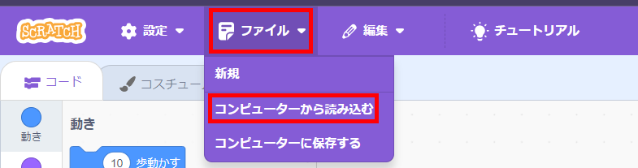
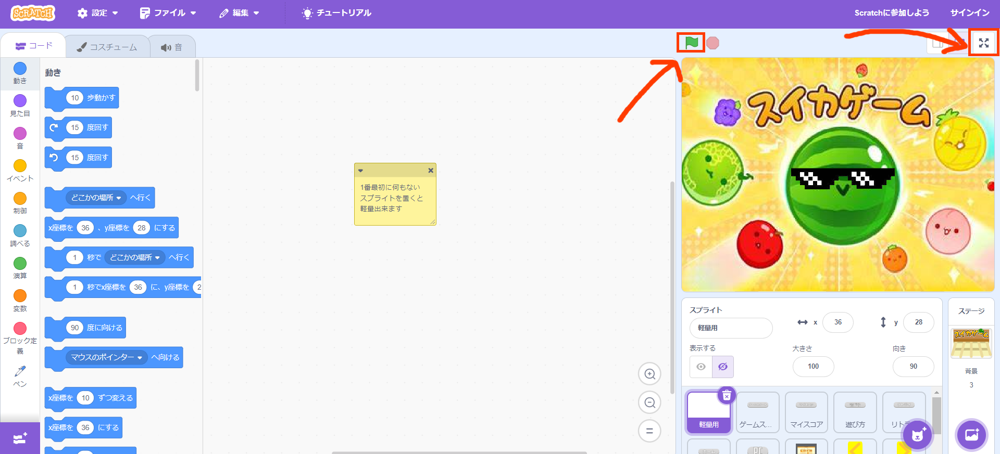

今回は学校でスイカゲームを紹介していきます
スクラッチとweb版の2つのやり方を紹介します
まずはこれをダウンロード
そしてスクラッチにもアクセスしてください
アクセスできたら上にある 作る をクリック！
そしたら、 ファイル ➡ コンピューターから読み込む をクリック、
ファイルの選択画面が開くので suika.sb3 を選択して開きましょう
そしたら後は 旗を押して実行＆全画面にすれば完了です！！
ChakraProxy V4にアクセスして、
https://suika-game.app/ をボックスに貼り付けてエンターを押してください
以上